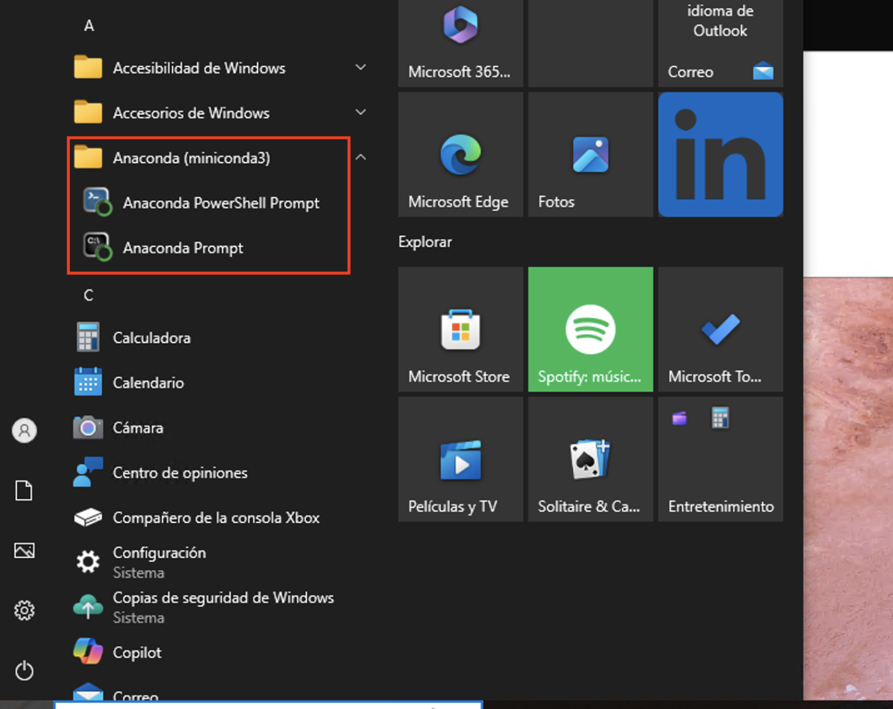
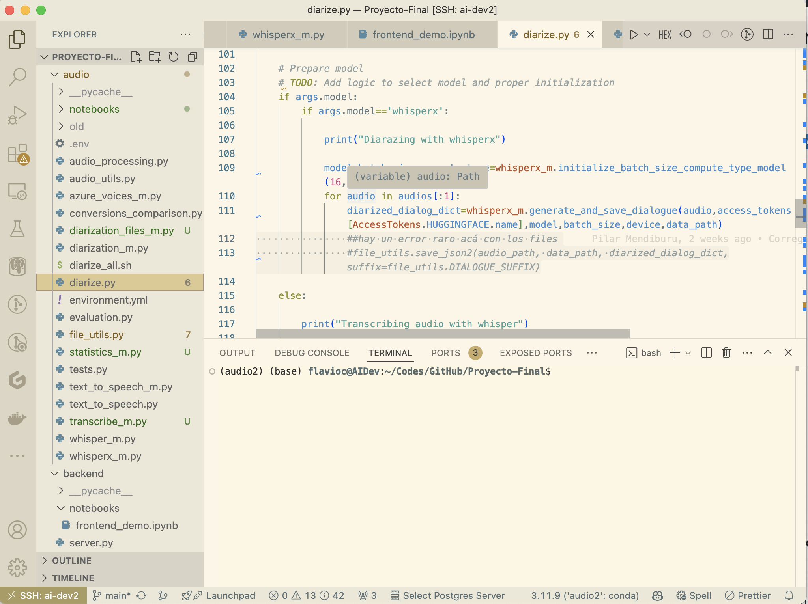
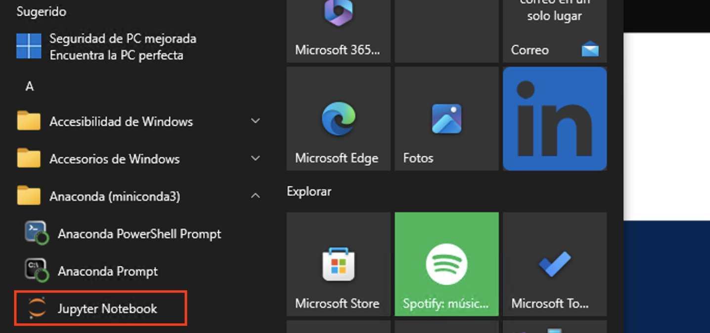

Introducción al lenguaje#
Cómo empezar: Instalación y uso#
Python es un lenguaje de programación interpretado, que se puede ejecutar sobre distintos sistemas operativos, es decir, es multiplataforma (suele usarse el término cross-platform). Además, la mayoría de los programas que existen (y posiblemente todos los que nosotros escribamos) pueden ejecutarse tanto en Linux como en windows y en Mac sin realizar ningún cambio.
Instalación#
En este curso utilizaremos Python 3.
Nota: Existe una versión anterior de Python, Python2.X (Python 2) cuya fecha de finalización de soporte fue el 1/1/2020. Fue una una versión madura, estable, y con muchas aplicaciones, y utilidades disponibles, sin embargo ya no se desarrolla ni se corrigen los errores ni problemas de seguridad.
La instalación oficial de Python provee lo necesario para utilizar el lenguaje. Sin embargo, con el correr del tiempo, se han creado otras muchas distribuciones de Python que incluyen aplicaciones y bibliotecas de uso común.
Estas distribuciones son implementaciones del lenguaje basadas en CPython, es decir, en C y Python. Existen otras implementaciones, como por ejemplo PyPy.
Para una instalación fácil de Python y los paquetes más comunes se pueden usar alguna de las distribuciones:
En este curso utilizaremos Anaconda, en su versión minimalista, miniconda. La diferencia más importante es la cantidad de paquetes que instala cada distribución inicialmente. Además, Anaconda provee una aplicación (Anaconda Navigator) para el manejo de paquetes.
En el curso el manejo de paquetes se realizará mediante la línea de comando y los ambientes de Python.
Linux#
En la terminal,
mkdir -p ~/miniconda3
wget https://repo.anaconda.com/miniconda/Miniconda3-latest-Linux-x86_64.sh -O ~/miniconda3/miniconda.sh
bash ~/miniconda3/miniconda.sh -b -u -p ~/miniconda3
rm ~/miniconda3/miniconda.sh
Eventualmente, en linux se podría instalar directamente todo lo necesario desde los repositorios. Por ejemplo en Ubuntu:
sudo apt-get install ipython3 ipython3-notebook spyder python3-matplotlib python3-numpy python3-scipy
o, en Fedora 28, en adelante:
sudo dnf install python3-ipython python3-notebook python3-matplotlib python3-numpy python3-scipy
Obviamente esto tiene un alcance global para todos los usuarios. Dependiendo de los casos de uso, será útil una u otra opción.
Windows#
La instalación es bastante sencilla, bajando el instalador acá o usando curl:
curl https://repo.anaconda.com/miniconda/Miniconda3-latest-Windows-x86_64.exe -o miniconda.exe
start /wait "" .\miniconda.exe /S
del miniconda.exe
Atención! Pueden existir problemas si el nombre del usuario en Windows contiene espacios.
Una vez instalado miniconda, veremos dos nuevos acceso directos en el menú

que corresponden a los dos tipos de terminales que instala miniconda.
Por defecto, miniconda no agrega Python al PATH, por lo tanto,
pythonno estará disponible en las terminales usuales (cmd.exey PowerShell)
Edición de código#
Como todo lenguaje, se pueden utilizar distintos editores de texto
En Linux: cualquier editor de texto (gedit, geany, kate, nano, emacs, vim, …)
En Mac: TextEdit funciona, sino TextWrangler, JEdit, …
o IDEs:
Spyder. (IDE - También viene con Anaconda, y con Python(x,y)).
Pycharm. (IDE, una versión comercial y una libre, ambos con muchas funcionalidades)
Ninja-IDE (IDE cross-platform, libre)
y, por supuesto, Visual Studio Code. Todos estos editores ofrecen plugins o extensiones para mejorar la experiencia de programación.
Documentación y ayudas#
Algunas fuentes de ayuda constante son:
En particular el Tutorial, también en español y la referencia de bibliotecas
En una terminal, puede obtener información sobre un paquete con
pydoc <comando>En una consola interactiva de Python, mediante
help(<comando>)La documentación de los paquetes:
Matplotlib, en particular la galería
etc.
Buscar “palabras clave + python” en un buscador. Es particularmente útil el sitio stackoverflow
Python es un lenguaje de tipos dinámicos, con lo cual las ayudas de los IDE pueden ser en general escasas. Veremos sin embargo en el curso algunas alternativas para poder mejorar la experiencia de programación.
Uso de Python: Interactivo o no#
Interfaces interactivas (consolas/terminales, notebooks)#
Hay muchas maneras de usar el lenguaje Python. Es un lenguaje interpretado e interactivo. Si ejecutamos la consola (cmd.exe en windows) y luego python, se abrirá la consola interactiva

En la consola interactiva podemos escribir sentencias o pequeños bloques de código que son ejecutados inmediatamente. Pero la consola interactiva estándar no tiene tantas características de conveniencia como otras, por ejemplo IPython que viene con “accesorios de comfort”.

La consola IPython supera a la estándar en muchos sentidos. Podemos autocompletar (<TAB>), ver ayuda rápida de cualquier objeto (?), etc.
Programas/scripts#
Una forma muy común/poderosa de usar Python es en forma no interactiva, escribiendo programas o scripts. Esto es, escribir nuestro código en un archivo con extensión .py para luego ejecutarlo con el intérprete. Por ejemplo, podemos crear un archivo hello.py (al que se le llama módulo) con este contenido:
print("Hola Mundo!")
Si ejecutamos python hello.py o ipython hello.py se ejecutará el interprete Python y obtendremos el resultado esperado (impresión por pantalla de “Hola Mundo!”, sin las comillas)
Python no exige un editor específico y hay muchos modos y maneras de programar. Lo que es importante al programar en Python es que la indentación define los bloques (definición de loops, if/else, funciones, clases, etc). Por esa razón es importante que el tabulado no mezcle espacios con caracteres específicos de tabulación. La manera que recomendaría es usar siempre espacios (uno usa la tecla [TAB] pero el editor lo traduce a un número determinado de espacios). La indentación recomendada es de 4 espacios (pero van a notar que yo uso 2).
Un buen editor es Spyder que tiene características de IDE (entorno integrado: editor + ayuda + consola interactiva).

También Pycharm funciona muy bien

Y por supuesto, VS Code

En todos los casos se puede ejecutar todo el código del archivo en la consola interactiva que incluye. Alternativamente, también se puede seleccionar sólo una porción del código para ejecutar.
Notebooks de Jupyter o Jupyter-Lab#
Para trabajar en forma interactiva es muy útil usar los Notebooks de Jupyter. El notebook es un entorno interactivo enriquecido. Podemos crear y editar “celdas” código Python que se pueden editar y volver a ejecutar, se pueden intercalar celdas de texto, fórmulas matemáticas, y hacer que los gráficos se muestren inscrutados en la misma pantalla o en ventanas separadas. Además se puede escribir texto con formato (como este que estamos viendo) con secciones, títulos. Estos archivos se guardan con extensión .ipynb, que pueden exportarse en distintos formatos tales como html (estáticos), en formato PDF, LaTeX, o como código python puro. (.py)
Instalando Python interactivo#
Miniconda instala algunos paquetes básicos, con lo cual tenemos que ir agregándolos. Primero instalaremos IPython, la consola interactiva de Python. Para eso utilizamos el comando conda. Desde cualquiera de las terminales de Anaconda instaladas:
conda install ipython
Y luego instalaremos la versión más sofisticada de Python interactivo, a través de Jupyter:
conda install jupyter
Y obtendremos

Para usar los notebooks, simplemente cliqueamos en el nuevo acceso directo a Jupyter Notebooks, o desde la terminal de Anaconda:
python -m notebook
Existe una versión más moderna de Jupyter notebooks denominada JupyterLab que puede instalarse como:
conda install -c conda-forge jupyterlab
Una vez instalada, podemos correrla con
jupyter lab
desde una terminal de Anaconda.
Comandos de Jupyter (o IPython)#
Algunos de los comandos mágicos#
Algunos de los comandos mágicos más importantes son:
%cddirect (Nos ubica en la carpeta direct)%ls(muestra un listado del directorio)%pwd(muestra el directorio donde estamos trabajando)%runfilename (corre un dado programa)%hist(muestra la historia de comandos utilizados)%mkdirdname (crea un directorio llamado dname)Tab completion: Apretando [TAB] completa los comandos o nombres de archivos.
En la consola de IPython tipee %cd ~ (i.e. “%cd” – “espacio” – “tilde”, y luego presione [RETURN]. Esto nos pone en el directorio HOME (default).
Después tipee %pwd (print working directory) y presione [RETURN] para ver en qué directorio estamos:
%pwd
'/Users/flavioc/Codes/GitHub/programacion-avanzada/docs/clases/1'
%cd ~
/Users/flavioc
%pwd
'/Users/flavioc'
En windows, el comando pwd va a dar algo así como:
In [3]: %pwd
Out[3]: C:\\Users\\usuario
Vamos a crear un directorio donde guardar ahora los programas de ejemplo que escribamos. Lo vamos a llamar scripts.
Primero vamos a ir al directorio que queremos, y crearlo. En mi caso lo voy a crear en mi HOME.
%cd
/Users/flavioc
%mkdir scripts
mkdir: scripts: File exists
%cd scripts
/Users/flavioc/scripts
%hist
# Más util en IPhyton que en Jupyter
%lsmagic
%magic
%pwd
%cd ~
%pwd
%cd
%mkdir scripts
%cd scripts
%hist
Hay varios otros comandos mágicos en IPython. Para leer información sobre el sistema de comandos mágicos utilice:
Finalmente, para obtener un resumen de comandos con una explicación breve, utilice:
%quickref
Comandos de Shell#
Se pueden correr comandos del sistema operativo tipeando ! seguido por el comando que se quiere ejecutar. Por ejemplo:
# En Linux
# !ls
# En Windows
!dir
zsh:1: command not found: dir
Vamos a escribir un programa de Python con comandos:
!echo "1+2" >> prog1.py
!echo "print('hola otra vez')" >> prog1.py
Notar que en Windows, el comando no requiere las comillas (“):
!echo 1+2 >> prog1.py !echo print('hola otra vez') >> prog1.py
# En Windows
!echo 1+2 >> prog1.py
!echo print('hola otra vez') >> prog1.py
zsh:1: unknown file attribute: h
%cat prog1.py
1+2
print('hola otra vez')
1+2
1+2
print('hola otra vez')
1+2
1+2
print('hola otra vez')
1+2
En windows
%catno está implementado, así que se debe usar directamente el comando de la terminal!type
!type prog1.py
prog1.py not found
%run prog1.py
hola otra vez
hola otra vez
hola otra vez
!date
Thu Mar 13 16:03:40 -03 2025
En windows,
!dateimprime la fecha y hora, pero espera una nueva fecha, con lo cual la ejecución del comando terminará cuando uno detenga la ejecución de la celda
Ejercicios 01 (a)#
Abra una terminal (consola) o notebook y utilícela como una calculadora para realizar las siguientes acciones:
Suponiendo que, de las tres horas de clases, dedicamos dos períodos de media hora para que realicen ejercicios (de Python), dedicamos diez minutos a distraernos en un recreo, y el resto a la exposición ‘teórica’, calcular cuántos minutos efectivos de trabajo tendremos en las 13 clases.
Calcule el porcentaje de horas del curso efectivamente dedicadas al trabajo.
¿Cómo se modifica el porcentaje anterior si incluimos el examen final?
Para la cantidad de alumnos presentes en el aula: ¿cuántas horas-persona de trabajo hay involucradas en este curso?
Muestre en la consola de Ipython (o usando Jupyter Notebooks):
el nombre de su directorio actual
los archivos en su directorio actual
Cree un subdirectorio llamado
tmpsi está usando Linux, muestre la fecha y hora
Borre el subdirectorio
tmp
Sabiendo que la velocidad de la luz es aproximadamente 300000 km/s y que un año luz se define como la distancia que recorre la luz en un año, usando la terminal de python o la notebook:
calcule cuántos kilómetros son nueve meses-luz,
considerando que la luz del sol tarda ocho minutos en llegar a la tierra, calcule a cuántos metros de la tierra está el sol.